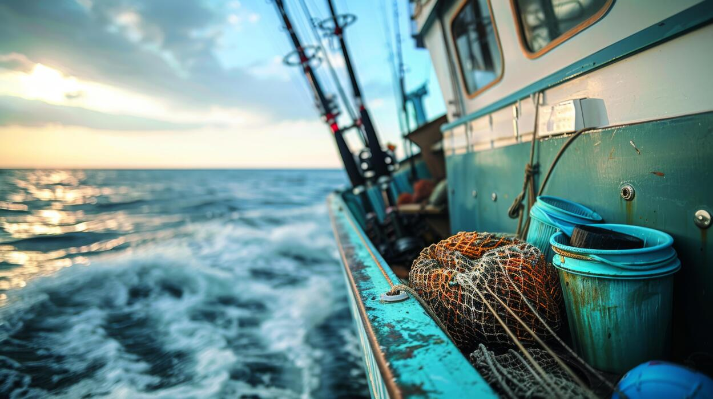
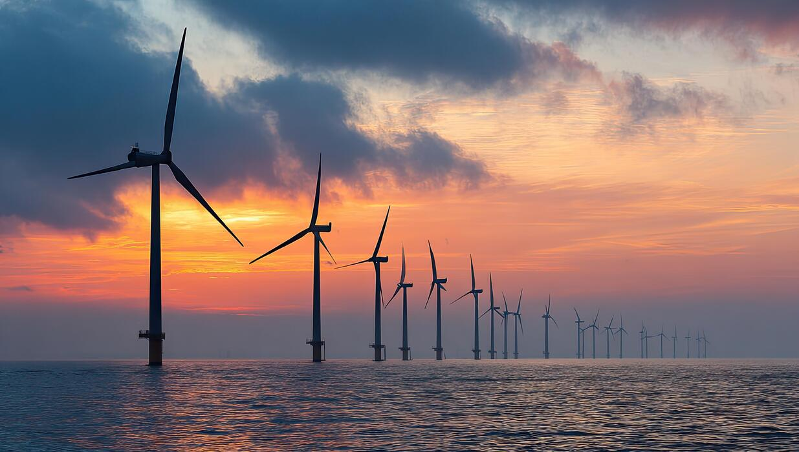
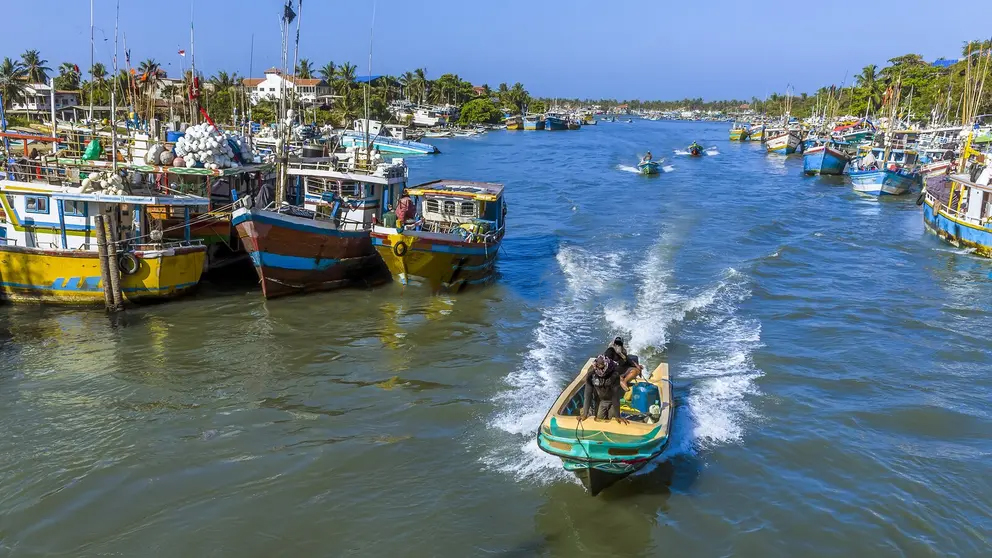

Sustainable Fisheries & the Blue Economy
Fisheries are among the most important food systems on Earth. They feed billions of people, employ hundreds of millions, and form the economic backbone of entire nations. Yet decades of industrial-scale exploitation, subsidised overcapacity, and poor governance have pushed global fish stocks to the brink of collapse. The transition to sustainable fisheries is not a choice — it is a necessity.

Commercial fishing is a vital economic activity — but one that must be managed sustainably to protect future generations.
The Overfishing Crisis
According to the UN Food and Agriculture Organisation, approximately 34% of global marine fish stocks are being harvested at biologically unsustainable levels — more than three times the proportion recorded in 1974. A further 60% are being fished at their maximum sustainable level, leaving very little buffer. Only 6% of global stocks are currently underfished.
Overfishing removes key species from marine ecosystems faster than they can reproduce, triggering cascading collapses across food webs. When apex predators like sharks and large tuna are removed, prey populations explode uncontrollably. When mid-level species are depleted, the entire trophic structure of the ocean destabilises.
Of global marine fish stocks are overfished — more than three times the figure from 1974.
Illegal, Unreported, and Unregulated (IUU) Fishing
IUU fishing undermines all efforts at sustainable management. It is estimated to account for up to 26 million tonnes of fish per year — valued at $10–23 billion. IUU vessels frequently operate in developing nations' territorial waters, stripping resources that small-scale fishers depend on for survival. Tackling IUU fishing requires international cooperation, vessel monitoring systems, and port-state control measures.
The Blue Economy: Prosperity Without Destruction
The blue economy is a framework for using ocean resources to generate sustainable economic growth, employment, and improved livelihoods while preserving ocean health. It extends beyond fisheries to encompass marine renewable energy, sustainable aquaculture, eco-tourism, deep-sea mining governance, and marine biotechnology.
The World Bank estimates the ocean economy generates over $1.5 trillion in value added per year and could double this by 2030 if managed sustainably. Countries that have invested in blue economy principles — including Norway, Iceland, and the Pacific Island nations — have demonstrated that responsible management of ocean resources generates long-term prosperity rather than short-term depletion.
- Sustainable aquaculture can supplement wild capture without destroying coastal habitats
- Marine renewable energy (tidal, wave, offshore wind) reduces dependence on fossil fuels
- Coral reef tourism generates an estimated $36 billion per year globally
- Marine biotechnology derives novel pharmaceuticals, materials, and enzymes from ocean organisms

Offshore renewable energy is a key pillar of the blue economy — powering communities without depleting marine life.
MSC Certification and Sustainable Seafood
The Marine Stewardship Council (MSC) is a global non-profit that certifies wild-capture fisheries that meet rigorous standards for sustainability. MSC-certified fisheries are assessed against three criteria: sustainable fish stocks, minimal environmental impact, and effective management. Consumers can identify MSC-certified seafood by the blue fish tick label on packaging.
Choosing certified seafood is one of the most direct ways an individual can support sustainable fisheries. It creates market demand that incentivises better fishing practices globally, demonstrating that profitability and environmental responsibility are not mutually exclusive.
Focus: Sri Lanka and Small-Scale Fisheries
Sri Lanka's fishing industry supports approximately 2.7 million people — fishers, processors, traders, and their families — predominantly through small-scale, artisanal methods. The country's Exclusive Economic Zone (EEZ) extends 200 nautical miles into the Indian Ocean, encompassing rich but increasingly stressed fishing grounds.
Sri Lankan fishers face a complex set of challenges: competition from large industrial vessels, the effects of climate change on fish migration patterns, post-conflict displacement of coastal communities, and limited access to cold-chain infrastructure that reduces post-harvest losses. Strengthening community-based fisheries management, expanding cooperatives, and improving market access for small-scale fishers are all critical pathways to a sustainable blue economy in Sri Lanka.
What You Can Do
- Always look for the MSC blue fish tick when buying fish or seafood products
- Ask your local supermarket, restaurant, or fishmonger where their fish comes from and whether it is sustainably sourced
- Reduce overall seafood consumption — even a one-day-a-week reduction has measurable impact
- Support organisations advocating for stronger fisheries governance and IUU fishing enforcement
- Never buy fish products from unlabelled or informal sources when abroad
- Advocate for the elimination of harmful fisheries subsidies that incentivise overcapacity

Small-scale fishers in developing nations are most vulnerable when fish stocks collapse.